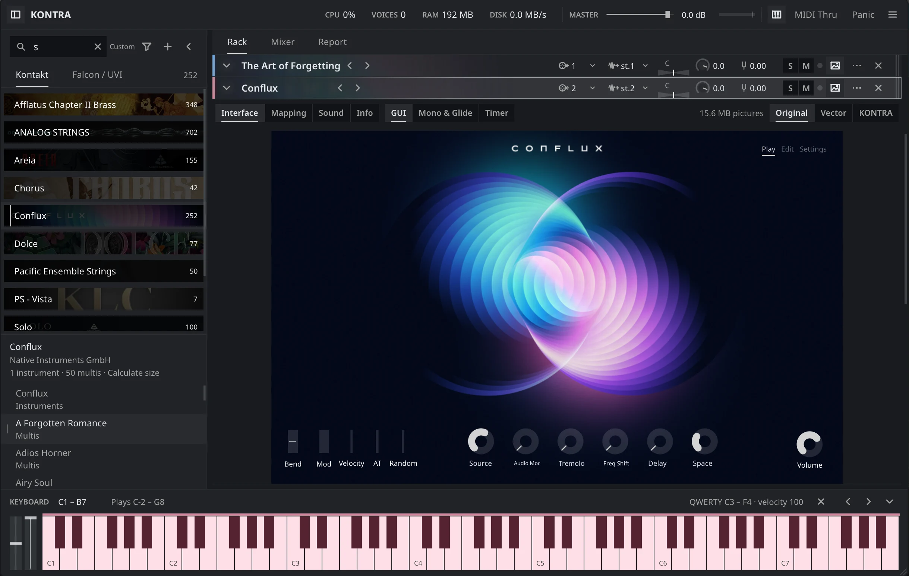

Your libraries.
Set free.
A free, open-source sample player.
Windows, macOS, Linux. CLAP, VST3 and standalone.
Latest nightlyAlpha
Download for Windowsx64Your platformDownload for macOSApple Silicon + IntelYour platformDownload for Linuxx64Your platform
Experimental Kontakt playback. Falcon support is in development. Check support before relying on a library.


Bring your own legally usable libraries. No samples included. Nightly builds can change saved-state formats; keep backups.